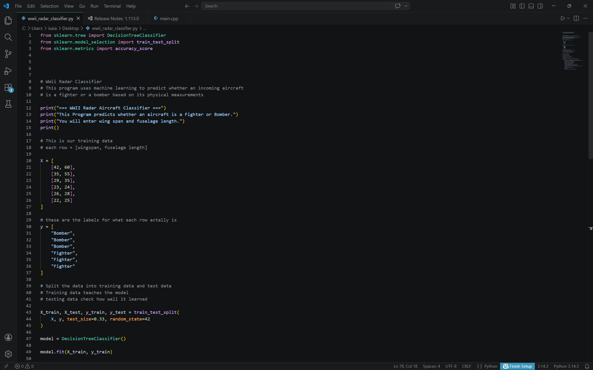
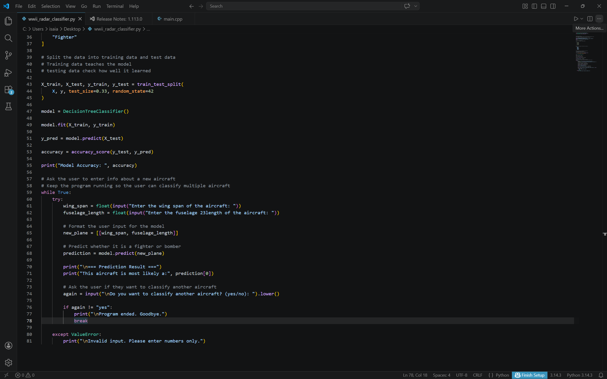

Python Plane Classifier
Python project that classifies aircraft type from radar-related dimensional inputs using machine learning.


Overview
This project is a Python-based machine learning classifier designed to identify the type of aircraft entering a radar system based on dimensional input data. It uses a decision-based classification process to evaluate user-provided values and return the most likely aircraft category.
Objectives Demonstrated
Objective 2: Implement a simple microprocessor using digital logic design.
This project supports Objective 2 by demonstrating structured logic, data handling, and conditional processing through software. The classifier receives input values, processes them through a defined model, and produces a classification result based on learned decision logic. Although implemented in Python instead of hardware logic gates, it still reflects processor-style evaluation of inputs and outputs in a clear, rules-driven system.
Objective 6: Implement and evaluate algorithms and methods enabling autonomy in a mobile robot
This project supports Objective 6 by applying algorithmic decision-making to automatically classify aircraft without manual sorting by the user. Once the model is trained, it uses learned methods to independently evaluate inputs and return predictions. That makes it a strong example of automated algorithmic behavior and intelligent system operation.
Evidence of Functionality
The screenshots above show the Python application interface and classification behavior. They serve as direct evidence that the project was implemented as a working software system capable of processing inputs and generating automated outputs.
Key Features
- Python-based classification system
- Decision-tree style machine learning workflow
- User input-driven predictions
- Automated aircraft category output
- Practical example of algorithmic decision-making